FUEL INJECTOR > REMOVAL |
| 1. DISCHARGE FUEL SYSTEM PRESSURE |
Discharge the fuel system pressure (Click here).
| 2. DISCONNECT CABLE FROM NEGATIVE BATTERY TERMINAL |
| 3. REMOVE FRONT FENDER SPLASH SHIELD SUB-ASSEMBLY LH |
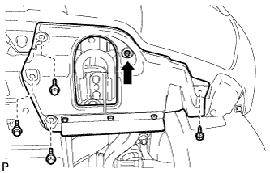 |
Remove the 3 bolts and screw.
Turn the clip indicated by the arrow in the illustration to remove the fender splash shield.
| 4. REMOVE FRONT FENDER SPLASH SHIELD SUB-ASSEMBLY RH |
| 5. REMOVE NO. 1 ENGINE UNDER COVER SUB-ASSEMBLY |
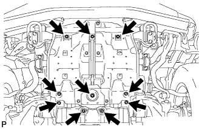 |
Remove the 10 bolts and under cover.
| 6. REMOVE UPPER RADIATOR SUPPORT SEAL |
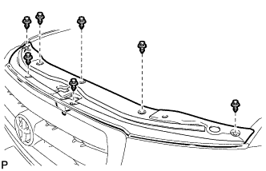 |
Remove the 7 clips and radiator support seal.
| 7. DRAIN ENGINE COOLANT |
Loosen the radiator drain cock plug and 2 cylinder block drain cock plugs.
Remove the radiator cap. Then drain the coolant.
Tighten the 2 cylinder block drain cock plugs.
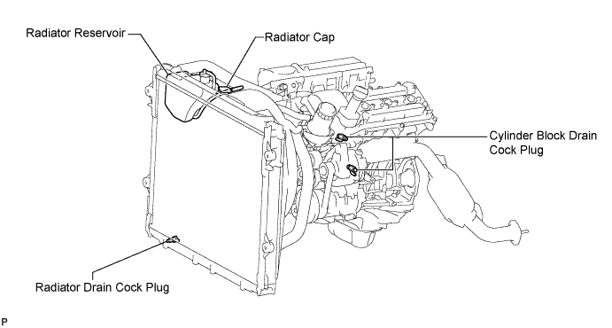
Tighten the radiator drain cock plug by hand.
| 8. REMOVE COWL TOP VENTILATOR LOUVER SUB-ASSEMBLY |
Remove the cowl top ventilator louver (Click here).
| 9. REMOVE V-BANK COVER |
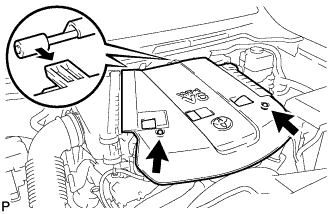 |
Remove the 2 nuts and V-bank cover.
| 10. REMOVE NO. 2 AIR CLEANER HOSE |
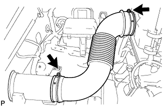 |
Loosen the 2 hose clamps and remove the air cleaner hose.
| 11. REMOVE AIR CLEANER ASSEMBLY |
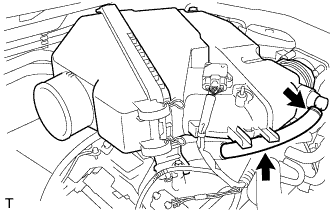 |
Disconnect the No. 2 ventilation hose.
Detach the hose clamp.
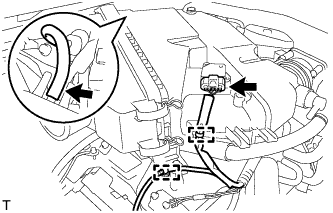 |
Disconnect the vacuum hose.
Disconnect the MAF meter connector.
Using a clip remover, detach the 2 wire harness clamps.
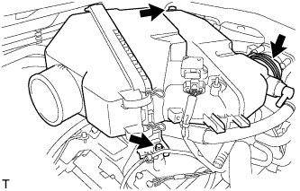 |
Loosen the hose clamp.
Remove the 2 bolts and air cleaner assembly.
| 12. REMOVE INTAKE AIR SURGE TANK |
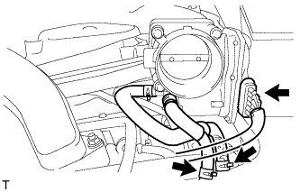 |
Disconnect the throttle body connector.
Disconnect the No. 4 water by-pass hose.
Disconnect the No. 5 water by-pass hose.
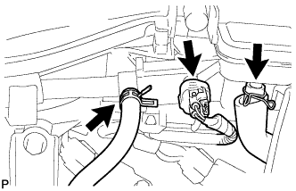 |
Disconnect the purge line hose.
Disconnect the purge VSV connector.
Disconnect the No. 1 ventilation hose.
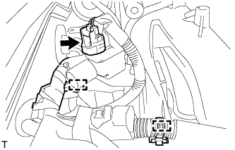 |
Disconnect the vacuum switching valve (for ACIS) connector.
Using a clip remover, detach the 2 wire harness clamps.
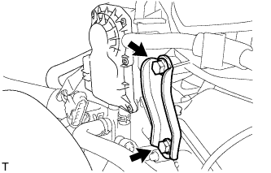 |
Remove the 2 bolts and throttle body bracket.
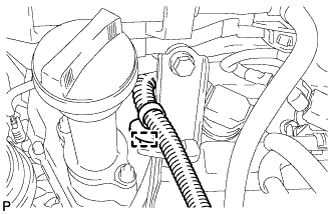 |
Using a clip remover, detach the wire harness clamp.
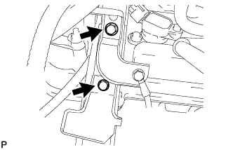 |
Remove the bolt and bracket from the No. 1 surge tank stay.
Remove the bolt and oil baffle plate.
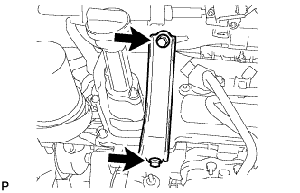 |
Remove the 2 bolts and No. 1 surge tank stay.
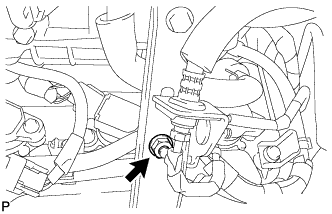 |
for Manual Transmission:
Remove the nut.
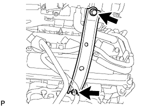 |
Remove the 2 bolts and No. 2 surge tank stay.
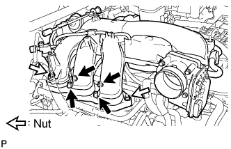 |
Remove the 2 nuts.
Using an 8 mm hexagon wrench, remove the 4 bolts. Then remove the intake air surge tank and gasket.
| 13. DISCONNECT NO. 1 FUEL PIPE SUB-ASSEMBLY |
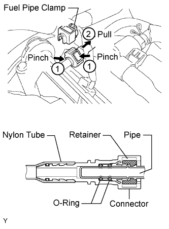 |
Remove the fuel pipe clamp.
Pinch the tube connector, and then pull the fuel pipe out of the delivery pipe as shown in the illustration.
| 14. DISCONNECT NO. 2 FUEL PIPE SUB-ASSEMBLY |
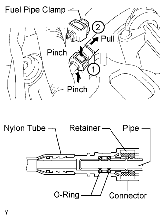 |
Remove the fuel pipe clamp.
Pinch the tube connector, and then pull the fuel pipe out of the pipe as shown in the illustration.
| 15. REMOVE FUEL DELIVERY PIPE SUB-ASSEMBLY |
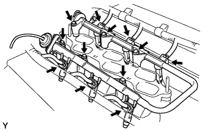 |
Disconnect the 6 fuel injector connectors.
Remove the 6 bolts and fuel delivery pipe together with the 6 fuel injectors.
| 16. REMOVE FUEL INJECTOR ASSEMBLY |
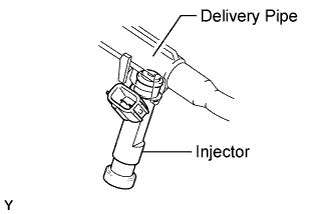 |
Pull the 6 fuel injectors from the fuel delivery pipe.
Remove the O-ring and injector vibration insulator from each fuel injector.